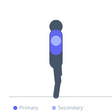
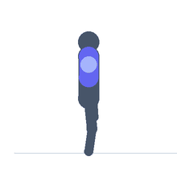

Exercise guide / Prone Y-Raise (Thumbs Up)
Prone Y-Raise (Thumbs Up)
The prone Y-raise performed with thumbs pointing upward (externally rotated shoulders) on a flat surface trains the lower trapezius through its primary action of upward scapular rotation and depression. The external rotation (thumbs up) is critical — it places the shoulder in its safest overhead position and maximally lengthens the lower trapezius before each repetition, improving the exercise's effectiveness as both a strengthening and postural correction tool.
Primary muscles
trapezius lower
Secondary muscles
deltoid posterior
Equipment
Optional
Standard Barbell


Starting position
- Lie face down on a bench or the floor. Arms extended in a Y position (45 degrees overhead from the spine). Thumbs pointing toward the ceiling.
Setup
- Bodyweight or 1-2 kg per hand. The movement is fully achievable without weight for most people.
Steps
- Step 1: Begin lying prone, arms in Y position, thumbs up.
- Step 2: Raise both arms toward the ceiling while maintaining the Y angle and thumbs-up rotation.
- Step 3: Squeeze the lower traps — think 'shoulder blades toward the back pockets'.
- Step 4: Hold 2 seconds at the top.
- Step 5: Lower under control.
Coaching cues
- Thumbs point to the ceiling throughout
- Y shape — 45 degrees from spine
- Shoulder blades pull toward your back pockets
Breathing
- Exhale raising. Inhale lowering.
Range of motion
- Floor-level to arms raised with scapulae fully depressed and retracted.
Tempo
- 2-2-2-0
Common mistakes
- Thumbs rotating down — this internally rotates the shoulder and reduces lower trap activation
- Arms going overhead (beyond Y) — the angle must be maintained
Safety
- Bodyweight appropriate for all fitness levels
- Very light optional load — this is a rehabilitation and activation drill
Training
- rehabilitation: 10–20 reps
- rehabilitation: 2–3 sets
- Rest: {'rehabilitation': 60}